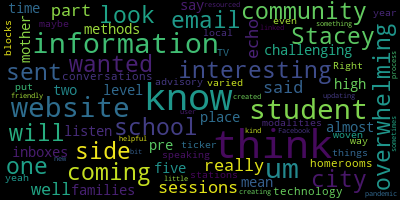

[McLaughlin]: But I can call the roll to start and then I'll read our behavioral health and subcommittee announcement agenda. So roll, Mia Mustone.
[Unidentified]: We can see you Mia, but we can't hear you and now you're frozen. Give me a minute to get on. Hope everyone else is doing well in this busy time of year. Stacey, I'm sure you don't have too much going on, right? Ha, ha, ha. Sorry. I know, everybody. Everybody looks tired. We'll make this quick, I promise. Mm-hmm. Mia cannot unmute, Peter. I can see if I can do it. Hold on. Mia, you should be good to unmute now. We heard you for a minute, but then you went back on mute again.
[McLaughlin]: So try again.
[Unidentified]: There I am.
[McLaughlin]: Melanie McLaughlin here and Paul Rusco. is absent, but may join us partially through the meeting. So we shall see. So again, this is the meeting of the behavioral health subcommittee. And I'll just read our, our posting. Please be advised that on Thursday, December 16, from five to six, there'll be a behavioral health subcommittee meeting held through remote participation via zoom. The purpose of the Thursday, December 16 2021 behavioral health subcommittee meeting is to formalize the quote, problem of practice, i.e. focus of the group meetings, subcommittee meetings for the remainder of the year, which will be every other month with community input and involvement. So we posted the meeting. We let folks know that it's been posted on the PTO sites. We let folks know. I suspect it's just a really busy time of year for everyone. And Some people have spoken to me about some things that they're interested in, but previously proposed focus areas for discussion include one, identifying resources for behavioral health supports for students and caregivers in our community. That might be like wraparound services to the school and working together to propose policy around identified resources. And then two was creating a visual flow chart with interpretation for English as a second language families and others regarding how to access services within the school community. This should be playing on channel 15. You can dial in 929-205-6099 if needed. If you have questions or comments, you can send them to Melanie McLaughlin. m-e-l-a-n-i-e-m-c-l-a-u-g-h-l-i-n at medford.k12.ma.us. This meeting can be viewed through Medford Community Media on Comcast channel 22 and Verizon channel 43. So thank you for joining us. entertaining me through that reading. And I will, again, we want to just identify what we're calling a problem of practice, which is essentially just a focus for the year for the meetings that will be held every other month, the intent of this subcommittee, when it was initially formed as a special education subcommittee, and then it was added on is special education and behavioral health, which are obviously two vast and very different topics. So we decided this year, we would go with every other month going between the topics. So last month was special education, where we identified a problem of practice, which is continuing to work on friendships in the community, in the schools, and broke down ways in which we wanted to do that. And this month is behavioral health, where we want to solidify what the discussion was in September around what Stacey Shulman, the director of guidance, talked with us about some of the things that would be helpful to focus on. So Stacey, would you give a little bit of a background on sort of what you were saying around the identifying resources and how that would be helpful? And then I think, you know, if, we vote to move this forward to the committee, we can just let them know that this is really what we'll be working on. We're not going to be obviously voting on policy or anything like that. The idea is that we sort of do this problem of practice focus on some, you know, putting together some research and minds together around the problem of practice. And then at the end of the year, we do a presentation to the school committee with potentially policy proposals. So Stacey, if you'd like to speak.
[Schulman]: Sure. So one of the challenges we've seen is that we have identified a lot of resources and, but there are two challenges happening right now. One is that For some reason, the information is not getting to everybody that we want it to. And the other challenge we're seeing is that the resources identified are just overwhelmed. We're not going to be able to solve that problem in terms of the lack of mental health resources in the community right now. It's just a pervasive problem that we're seeing. I was on a call yesterday for the S3LC, which is the Safe, Supportive Schools Learning Collaborative that we were accepted into, apart with 15 other districts in the US, and they're all seeing the same problem, which is that, you know, community mental health providers in every facet are just completely overwhelmed. And so the challenge we're seeing is that is creating a fallback on the schools.
[McLaughlin]: Melanie, you're on mute. Sorry, I said, can you tell us a little bit more about the S3LC, the Safe, Supportive Schools Learning Collaborative? You said we were included with 15 other districts?
[Schulman]: Yep, so we applied in the spring and I was grateful we were accepted. And it is a learning collaborative of 15 districts within the US. We meet monthly. We have to analyze our district's mental health services. And so we did that already using the SHAPE system. It's a free online assessment that districts utilize. And we created our problem of practice that we want to utilize their resources for. And we have a mentor as well, Lisa Barron from AIP in Boston. What's AIP? AIP. What is that? Alliance, Inclusion, and Prevention. And so we have identified mental health screeners as our goal so that we would, by the end of this next school year, 22, 23, be able to screen all of our K through 12 students. And yesterday we were talking about cultural competencies regarding screeners and assessments. and we're starting to sort of educate ourselves a little bit more around some of those areas and figure out the early steps regarding what may work best for Medford.
[McLaughlin]: Wow, that's really great. It would be great to get updates on that. So you said you guys meet monthly?
[Schulman]: We meet monthly with the larger group and they provide a lot of resources and we have conversations we meet every other week with our internal group. That's great. And the internal group is Medford with your mentor or without your mentor? It's either way. She is certainly willing to help us. I often end up catching her outside of meetings. If you can imagine these days, it's pretty difficult to have meetings across schools, especially. So I, this week ran an asynchronous meeting, which is sort of, here's the information they gave us, you know, read up on this and answer some of these. questions related to that so we can keep the project moving. But, you know, it's interesting, a lot of what they were talking about, which was contrary to what I had previously been taught, was that using mental health screeners are very off-putting for certain members of our community. So we may want to look at, you know, internalizing and externalizing wellness screeners instead. We're running the Community That Cares survey in conjunction with the Board of Health next week. That's a survey we do every two years, and that'll give us some nice, you know, base data to go off of, but we're looking in terms of having in-house screeners so that we can automatically pull kids for follow-up with Councilors immediately. So what does the Community That Cares survey, sort of, what is that? The Community Care Survey asks a variety of questions, including mental health, general wellness, habits, social media habits, how you feel connected to your school, do you have connections with adults? A lot of it is around alcohol, drugs, and tobacco use as well. That was its original sort of platform when it started 20, 30 years ago, and now it's developed to capture more areas. And is that high school? Six through 12. Six through 12. And where does that data go? It goes to the board of health and then they present it to the school committee.
[McLaughlin]: Okay.
[Schulman]: This year? Yes, so we used to run the survey in the spring, and then they would, it takes a little bit of time to correlate and aggregate the data and get everything back, and they would present it in the fall. And when we met during the 2020 year, we decided that we would like to switch it so that we were running the survey in the fall and presenting in the spring. It just makes sense in order for planning for the next school year. with resources and budgets and curriculum and supports and everything in place.
[Unidentified]: Great.
[McLaughlin]: So is there a link to the S3LC2 or something that we can learn more about? It would be great for the December, January, February meeting, Stacey, if we can just get an update too on that again. I think that's really interesting for folks to hear about. Sure. I can send you the press release.
[Schulman]: Oh, that'd be great. Thank you. So we sent it out to the community, I believe, in August, which is the same time that we were featured on Boston 25 for our mental health supports.
[McLaughlin]: Oh, that's awesome. Yeah, see, I think I missed that. So I must have been somewhere in August. I don't know where. I think it was someplace nice, actually. Now that I'm remembering it. Good. So back to the problem of practice. So I know you're saying there's a lot of identified resources and that already. And that, you know, obviously there's an overwhelmed, you know, an issue of mental health services and supports being overwhelmed right now with requests with just so many requests, you know, in and around the community. And that but that the identified resources weren't resources really weren't getting where you wanted. So going back to the problem of practice and thinking back to what we had said at the at the last meeting about identifying resources for health supports for students and caregivers in our community and working together to propose policy around those resources. So How do you think this could be operationalized as part of the subcommittee in a way that would be useful to the community around behavioral health, mental health supports? How can we utilize this group to help identify policy towards this end that would be helpful? Do you think? I mean, the discussion that we had before was sort of, you know, starting to have community members sort of, or subcommittee members sort of look at resources and, you know, talk to constituents and, you know, show up and share what resources have been useful to them. But I think it was also about how to get those resources and information out into the community. So is it looking at sort of, you know, similar to what your S3LC group is doing around you know, best practices in terms of what that looks like for getting supports out into the community and for collaborating around these. I mean, I know that, I know that Paul Rebel at the Graduate School of Education at Harvard does a lot of work around mental health wraparound services and supports. And I'm sure that there's a lot of research and data around that. So I don't know if that's helpful. Like, I guess I'm trying to wrap my mind around what would be helpful to you and to your team and to the community.
[Schulman]: I think the biggest challenge we're seeing is that I could send out a different email every day. But for some reason, that information is not getting. Parents are saying, oh, I didn't see it. I missed it. Even students are saying that they're not getting that information. And so it's challenging in that way. just top of mind, I can't think about how that correlates to a school committee policy. But that's certainly a problem of practice we're experiencing. And I don't think we're alone with that. I think other areas are experiencing this as well.
[McLaughlin]: Yeah, I mean, I think it's interesting. And I would love to hear from like, you know, others on the in the meeting, Miss Lucy, Mia, if you have any input that you want to share as well. But I mean, I think It is interesting just even as a school committee member not realizing like again the Boston 25 piece and the in the press release out to the community around this particular project and so I guess, first I would say, you know, maybe it is breaking down what are the methods of communication now, you know, what do families, potentially feel like is working or isn't working so you know I hate to say, you know, another a survey or whatever around that but sort of I guess maybe thinking about what is the method of communication now and that could be something that we're looking at and maybe saving examples of the communication that's going on and what that looks like and then you know certainly I'm willing to invite people for the next subcommittee meeting to share their experience around how they're getting information and what's useful and I think you know one of the things that I keep hearing from the community particularly even in the last school committee meeting when we were talking about concerns around student health and safety in our schools, was that like, how do we know where to go, right? Where we go, like, where does the student go when they have an issue? Is it in our day, it was guidance Councilors, today it might be school adjustment Councilors or something else altogether. It's just kind of, you know, that seems sort of unclear. And maybe that gets to the second point around a visual flowchart around sort of here's where things go, here's an example of a concern, here's where you would go in that concern or something like that. Is there something that exists already for that, Stacey?
[Schulman]: Yeah, so we put together from that advisory, I'm sorry, from those comments that we had with students and with families, And we put together a advisory lesson around who do you talk to or what, right? Like if I have a concern, who do I go to and what are those people's names and where are they located? And then we echoed that response for the middle schools as well. Elementary is a little bit more um yeah honed in right because you have your teacher and your teacher is your point person and and you you know parents hear from our their elementary teachers all the time once you get up into the secondary schools it's a little bit more fractured um so students need additional support what i also what was really eye-opening from the last few weeks is we front loaded this material in september because we wanted students to be familiar with who their Councilors were, we made a lot of visits. And what it showed to me was that that information needs to be repeated more throughout the year. And in a time of crisis, that information is not easily recalled. So I think students were like, oh, nice to meet you. And great, great, great. but in and we need to make sure that's repeated later on in the year. So we did a lot of work on the first six weeks this year across the board from K through 12. And I think what we've learned is that we need definitely another booster at some point around this time of year.
[McLaughlin]: Yeah, and maybe I think that again for the next subcommittee meeting, maybe it could be really helpful to To, you know, to see that flowchart to talk about like where the information was, you know that you got you know it from and how useful it's been and how we can think about, you know, what that looks like in the community and or sharing it, you know, outside of the school with the with families and whoever. and have it be sort of a repeated. And I think that's part of it is, I think sometimes we might think we got the information out and so it's out there, but again, if you missed it, or if it was at a time that was, like you said, potentially traumatic time, or if it's a traumatic time now, trying to have recall through trauma, or when you're triggered again, is like obviously a very difficult thing to be able to do. And so having it easy and at hand, I think is interesting.
[Galusi]: I think being part of the student sessions as well, it was very interesting. I think I have to just echo what was said about this just being a really challenging time. And I think information that's coming in can be overwhelming. And so I know my level is pre-K to five, but I'm the mother of two high school students. So I mean, I know what both of my email inboxes look like. And when email is sent and information is sent to families, I think it can be overwhelming. It was interesting to me to listen to the students say that they wanted information almost in methods that we had in place like before technology. You know, they wanted those conversations in their homerooms or in their advisory blocks. This is like what Stacey was speaking to, to like have it woven through the year and have it like varied modalities. I don't know if there are things that we can have on, um, even like through the city side. Like if I look to our local community TV stations, um, both the school one and the one that's on the city side, if maybe there's like, yeah. Right. A way to put like a ticker or something on it. Um, and I know. We're also in the process of updating and creating a new website, which I think will be a little bit more user-friendly to our community. And I think that that will also be helpful. Because I know during the pandemic, Stacey had created her own kind of resourced website, which is linked to our website. But I think sometimes coming up with other
[McLaughlin]: uh ways to direct people to that like wealth of information it was all resources um yeah i think the varied modalities is a really good idea um and i think that like so i'm thinking like email email has now become yeah it's overwhelming oh yeah email is probably the least useful form of communication for me at this point because same thing it's it's there's so many ask me amia knows right mia you have to text me if i'm my she's like i sent you an email i'm like oh sorry There's so many of them. And I know for my student last year, who was a senior last year at the high school, that was an ongoing problem. He was rarely looking at his email. And I think that unless it rises to the surface or it's been flagged in a number of ways, different modalities, like somebody texts you to tell you we have an email, which is a pain in the neck, right? But it's sort of thinking about that. And I think a lot of our families, I mean, I certainly see this when there's a problem at the school, and I'm sure administration sees this as well. Where's the first place everybody learns about a problem in our school? Anybody?
[Galusi]: Facebook.
[McLaughlin]: Yeah, social media, right? So, you know, really using that platform to get information out both through Instagram for our kids or social media, or even like, you know, dare I say TikTok, but, you know, there are ways I think that we could be thinking about asking the students to, you know, sort of what are the modalities that we can get information out. So getting back to this subcommittee and, you know, sort of being able to focus on a problem of practice, you know, perhaps it's really looking taking the time to look at the resources that are gonna be woven into the website, but both from Stacy's appendage, I guess, to the website and some of the information that's on the website currently and this flow chart for the next meeting to really be able to think about, okay, here's sort of the information that really stood out to us as being useful to families and to students, how can we think about pushing that information forward based on both our personal and our professional experience in the schools and as subcommittee members? Just thinking out loud, again, going back to the problem of practice, what are you folks thinking on that? So it looks like the flow chart exists, so that's great. That can come back at the, you know, February meeting so we can look at that and think about how it's actually getting out. Is that interpreted? Has that been interpreted, Stacey?
[Schulman]: Yes. So I sent it out to families, and it should have been interpreted because it was under 5,000 words. OK.
[McLaughlin]: So when you say you sent it out to family, you sent it out to families at where, the high school?
[Schulman]: High school and both middle schools sent out the link to that sheet as far as like, who do you talk to? And on there, it was also connected to our community resource guide, which is very robust. That is not translated. So that's something we need to work on. It's probably, It's definitely over 50 pages, so it's it's a large document.
[McLaughlin]: OK, I would. I'll definitely take a look at that. Can you send that email that you got? So I'm assuming out of district students did not get that email, which I'm assuming that services are also available to out of out of district students as well.
[Schulman]: Of course, yes. I mean, we utilize our school messenger system, so as long as their emails are in our system. They're getting it.
[McLaughlin]: All right, I'll check with Joan Bowen about that because that's part of the special ed subcommittee conversation around making sure that's out. So OK, the community resource guide and the flowchart went out to six through 12.
[Schulman]: It's not necessarily a flowchart. It's like this is who your Councilor is connected to. you know, what your last name is. This is how you find out who your Councilor is. This is your principal's name. This is the adjustment Councilor in your building. This is the school psychologist in your building. Everyone, sorry, everyone six through 12 has a Councilor, a school Councilor. And from there you're referred to either an adjustment Councilor or a school psychologist. Okay, Mia?
[Mustone]: I just want to say I got it for Teagan and it was great. And I forwarded to Teagan and said, these are your people if you need them. So it was to the point and what we needed to know.
[McLaughlin]: That's awesome. I'd love to see it. And maybe we can do a quick sort of visual for folks that just learned better visually, but we can figure that out.
[Schulman]: Sure. And then I'm curious to know, Mia, if you received the group counseling email yesterday as well.
[Mustone]: Yes, right. Yes, with all the different groups, which they were, they looked great. So thank you for doing all those groups.
[McLaughlin]: Of course. Yeah, I can forward it to you. I have them. Yeah. Um, okay. Um, and so And so it sounds like the identifying the resources for health supports for students and caregivers in our community and working together to propose policy regarding access to the services. It sounds like the community resource guide has been created. So maybe it's the subcommittee could be looking at that guide. seeing how updated it is and seeing what the opportunities are for being able to disseminate that to the community in a way that is, whether it's translated or how we can make that happen from a policy perspective. So if you could email the community resource guide, or should we just go online to get it for the subcommittee?
[Schulman]: It was connected in those emails.
[McLaughlin]: Okay, so when Mia sends the email, I'll make sure that the rest of the subcommittee, that Paul gets it if he hasn't already. And then maybe we can look at that for the agenda for next time as the community resource guide and the visual flow chart for the February meeting. And then in the interim, Stacey and maybe Mia, you could, and Suzanne and Maurice, if you, Dr. Edward, if you're interested or able, asking your nephew or what have you, just doing a little bit of informal qualitative data around the folks that you know and sort of how they're getting information and whether that and in what ways that's useful. Are they getting the information? Have they seen it? Have they heard it? Because I think certainly, you know, we've been hearing a lot from community members in the past month or so feeling like they're not hearing this information. So I think that it's like, okay, you know, where's the disconnect? Or maybe they're feeling like they are now more after some of the events of last month, but I think Dr. Edwin said, I'm not sure if you were on the call when there was the conversation about repeating information sort of, you know, with trauma, how sort of, it can be hard to access that information when you're in the throes of trauma and forgetting that, like where that was and sort of how to, you know, being sure that it's repeated during, you know, times of difficulty or whatever, so that we're making sure that the message is sort of being repeated over time.
[Unidentified]: Okay, well, is there anything else that anybody wants to add? No.
[McLaughlin]: So I think it looks like we're sticking with the problem of practice, if you will, that we had is the proposed one in the agenda with some slight modifications based on our notes. And in the next meeting, which is February, I don't have the date in front of me right now, I apologize. I can look it up if folks want but it's February well we'll let them know before you know at the beginning of February at one of the maybe superintendents updates or something that the meeting's coming but it's in February we'll have info on the S3LC group. Stacey a little bit of an update on that if you don't mind right? Of course. And then the link the press release you'll send over to that and the community Boston TV piece. I think that would be great. That's another, I think that's actually a good example of something to repeat the messaging on that, especially since it was August. It might be nice for the community to know that like that happened. You guys were recognized for that. You're working on that and doing that. I think that I didn't realize that. I think that sounds like a really cool project and it sounds like some, you guys have a great problem or practice for next year. And I mean, I know that a little sensitivity around the screening piece. So I personally also like the wellness screening. I think that that's, that really kind of flips the script a bit. for people. So I guess the messaging you might be thinking about that, but I think it sounds really, really interesting. So I look forward to hearing from you guys again in February.
[Schulman]: Anything else? The only thing I will just do a small plug because this is a behavioral health subcommittee that we did receive another very large grant for a community mental health clinician to be housed within Medford High School for easier access for counseling. and also for a paraprofessional to support our steps room. And the steps room has a clinical social worker, and it's for students who are reentering school after a significant absence or a mental health crisis. And so that was really amazing to get. We're hoping to have somebody in the building sooner than later. But of course, there's a wait time as we build our staffing, in Massachusetts in terms of more Councilors. But we have the rooms already set up. We're ready to go. We're just waiting for those people to be housed at the school.
[McLaughlin]: But that will be a great resource for students. It is, and that's great news. Congratulations. And I think that's the real importance of the subcommittee meetings because we're able to get into some of the nitty gritty in these meetings and to be able to think about how we're sharing this information in the community. And sometimes we're not always able to get that information sort of on the regular because there's so many other things going on. So that's great news. Congratulations. Dr. Edward-Vincent, I don't know if you've considered including that in your comments for next week, but would you consider including that? Because I think that's really great news.
[Unidentified]: I can't hear you, you're on mute. Let me see if I can unmute, I asked.
[Edouard-Vincent]: Thank you, it was a different setting. Yes, no, I can definitely, that was kind of hot off the press, so that was great news and you got it first, but we definitely will talk about that wonderful grant that's coming our way. And thank you Stacey for that. Yeah, thank you, Stacy. That's really great news.
[Schulman]: And that was with Avery Hines. So she was the leader on that. I was her secondary assistant with some, you know, I'm always asking her to put in mental health for those grants and she's very amenable to that. So I appreciate her.
[McLaughlin]: That's excellent. That's really good news. Yeah, and the steps and just maybe a little bit of an explanation to her on the steps thing would be really helpful. Cause I think a lot of folks don't even know that those things exist until you're in that situation, right? And then you have to find out the hard way that exists. So when people think that there's not, you know, mental health supports, they don't know because maybe they haven't had to access them. So that's great. Thank you. Okay, and it is 537 and we're 20 minutes early. Can we get a motion to adjourn? Mia?
[Mustone]: Motion to adjourn.
[McLaughlin]: I second that motion. So thank you all.
|
total time: 17.66 minutes total words: 3120 |
total time: 1.89 minutes total words: 280  |
total time: 0.29 minutes total words: 66 |
total time: 0.36 minutes total words: 57 |
{kind=link}
{kind=link}
{kind=link}
{kind=link}